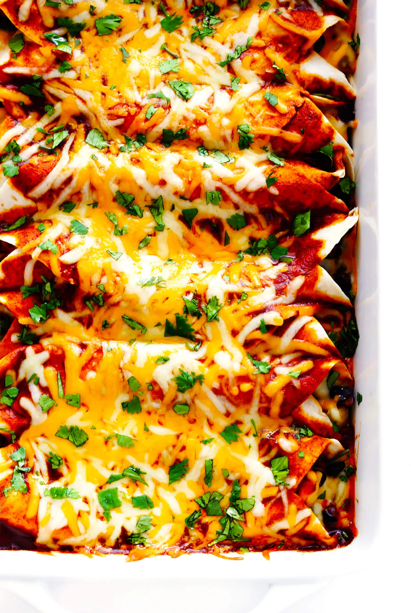

Chole Masala

We have the rich food traditions of Mexico to thank for bringing enchiladas to the world. ♡ Historians believe that the origins of enchiladas
actually date back to Aztec times, when the tradition of rolling or folding food into corn tortillas is believed to have begun.
(The word enchilada is derived from the Spanish verb enchilar, which means “to season with chili.”)
This particular chicken enchilada recipe probably most closely aligns with Tex-Mex and New Mexican styles of enchiladas, especially being made
with flour tortillas (although you are welcome to use corn tortillas), filled with green chiles and soft shredded cheese, and made with a
tomato-free red chile sauce.
Ingredients
Red Enchilada Sauce
- 2 tbsp of avacado or olive oil
- 2 tbsp of flour
- 1/4 cup of chili powder
- 1/2 tsp of garlic powder
- 1/2 tsp of ground cumin
- 1/4 tsp of dried oregano
- 2 cups of chicken or vegetable stock
- salt to taste
Enchilads
- 2 tbsp of avacado or olive oil
- 1 small white onion, diced
- 750g of boneless chicken beast, diced into small cubes
- 120g of diced green chili
- sea salt and freshly cracked pepper
- 425g of black beans, rinsed and drained
- 8 large flour torillas
- salt to taste
- 1 batch red enchilada sauce
- optional toppings: fresh cilantro, chopped red onions, diced avocado, sour cream, and/or crumbled cotija cheese
Method
Red Enchilada Sauce
- Cook the roux and spices: Heat oil in a small saucepan over medium-high heat. Add flour and cook for 1 minute, whisking constantly.
Add in the chili powder, garlic powder, cumin and oregano and cook for 1 more minute, whisking constantly.
- Simmer: Gradually pour in the stock, whisking constantly to combine until no lumps remain. Continue cooking until the sauce reaches a simmer.
Then reduce heat to medium-low to maintain the simmer (the sauce should continue lightly bubbling) for about 10-15 minutes, uncovered, until the
sauce has slightly thickened.
- Season: Give the sauce a taste and season with salt, as needed. (I typically add 1/2 teaspoon fine sea salt, but the saltiness of the sauce can
vary depending on the brand of stock that you use.)
Enchiladas
- Prep oven and enchilada sauce. Preheat oven to 180°C. Prepare your enchilada sauce.
- Sauté the filling mixture. In large sauté pan, heat oil over medium-high heat. Add onion and sauté for 3 minutes, stirring occasionally.
Add diced chicken and green chiles, and season with a generous pinch of salt and pepper. Sauté the mixture for 6-8 minutes,
stirring occasionally, or until the chicken is cooked through. Add in the beans and stir until evenly combined. Remove pan from heat and set aside.
- Assemble the enchiladas. To assemble the enchiladas, set up an assembly line including: tortillas, enchilada sauce, chicken mixture, and cheese.
Lay out a tortilla, and spread two tablespoons of sauce over the surface of the tortilla. Add a generous spoonful of the chicken mixture in a line down
the center of the tortilla, then sprinkle with 1/3 cup cheese. Roll up tortilla and place in a greased 9 x 13-inch baking dish. Assemble the remaining enchiladas.
Then spread any remaining sauce evenly over the top of the enchiladas, followed by any extra cheese.
- Bake uncovered for 20 minutes, until the enchiladas are cooked through and the tortillas are slightly crispy on the outside.
Transfer the baking dish to a wire baking rack.
- Serve the enchiladas immediately while they’re nice and hot and melty, garnished with lots of fresh toppings. Enjoy!